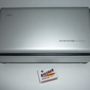
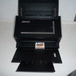

ScanSnap oder Schnappi der Allesfresser?
Natürlich braucht man für ein papierloses Büro einen professionellen Scanner. Für kleinere Unternehmen oder Freiberufler wäre aber ein großes Multifunktionsgerät völlig überdimensioniert und viel zu teuer. Insbesondere, da ja auch nicht mehr hunderte von Seiten gedruckt oder kopiert werden sollen. Nach langem Suchen, Rezensionen Lesen und Testen bin ich bei dem Modell Fujitsu ScanSnap 1500 gelandet.

- Fujitsu ScanSnap im „Sleep-Modus“
Der ScanSnap ist ein kleiner, feiner, dennoch durabler und verflixt schneller Scanner, der sogar noch Platz auf dem Schreibtisch findet. Um zu Scannen muss man kein kompliziertes Menü aufrufen, sondern einfach Dokumente einlegen, Starttaste am Gerät betätigen und schon geht’s los. Die Duplexfunktion (doppelseitiges Scannen) funktioniert super. Leere Seiten werden entfernt, Seiten, die versehentlich verkehrt herum eingelegt wurden, werden gedreht.
Wahlweise kann man die Dateien automatisch benennen lassen oder selbst Dateinamen vergeben, einzelne PDF’s erzeugen, oder ein mehrseitiges Dokument zusammenfassen. Macht einfach Spaß. Ich habe ihn auf „Schnappi“ getauft, weil er ein kleiner „Allesfresser“ ist. 20 Seiten in der Minute zu scannen ist kein Problem, Thermobelege und Visitenkarten funktionieren auch problemlos. Sollte es doch einmal einen Papierstau geben, ist der schnell behoben.
Mit dem Scanner wird der Abby Fine Reader mitgeliefert. Mit dieser Software ist es möglich, die gescannten PDF’s in durchsuchbare PDF“s zu konvertieren und auch die Konvertierung von PDF in ein Word- oder Exceldokument klappt recht gut, aber nicht ganz fehlerfrei. Das Bedienmenü ist am Anfang etwas gewöhnungsbedürftig und den Organizer zu öffnen, ohne gerade etwas gescannt zu haben ist auch nicht eben komfortabel. Auch macht die Erkennung von durchsuchbaren PDF’s mit der Windows-Suche jedenfalls unter Vista Probleme. Aber mit „Google Desktop“ findet man dennoch alles. Bei anderen Betriebsystemen funktioniert die Erkennung sehr gut.
Wichtig war mir „Schnappi“ wegen der Visitenkartenerkennung und der leider immer noch häufig ausgegebenen Thermobelege. Es ist ein

- Fujitsu ScanSnap im Arbeitsmodus
Vergnügen, mit welcher Präzison die Belege und Karten eingezogen werden. Staus gibt es selten und wenn, sind sie unkompliziert zu beseitigen. Die Umwandlung in die verschiedenen Kontaktdateien funktioniert ganz passabel, aber man sollte dennoch jeden Datensatz noch mal kontrollieren. Die VK-Scanfunktion ist im Prinzip ’ne tolle Sache aber unbedingt verbesserungsbedürftig.
Für die Hardware würde ich glatt eine Höchstnote vergeben. Die Software hinkt da hinterher. Dennoch für den Preis ist der ScanSnap für mich ein professionelles Gerät für kleine-, mittelständische und Einzelunternehmer. Es gibt nicht wirklich etwas vergleichbares am Markt. Insgesamt ist das Verhältnis Preis Leistung super. Der ScanSnap kostet derzeit zwischen 340 und 360 Euro. Wer noch einmal 100 Euro drauf legt, bekommt noch eine Voll(!)version von Adobe Acrobat dazu. Die günstigere Version taucht z.B. bei Amazon als „gebraucht“ auf, was sie aber meist nicht ist, lediglich Adobe Acrobat fehlt. Diese Version kostet sonst schon allein so viel wie der Scanner und Programm jetzt zusammen. Aber man sollte sich schon überlegen, ob man die Vollversion von dieses Programm wirklich braucht.
Fujitsu ScanSnap S1500 Scanner A4 40 Seiten 600 x 600 dpi color USB 2.0
Weitere Artikel

Digitale Tools für Zusammenarbeit im Office
E-Mail, Digitale Ablage und eine Branchensoftware sind schon lange nicht mehr genug für effiziente Zusammenarbeit. Doch bevor Sie sich in einem Dschungel an digitalen Werkzeugen verlieren, sollten Sie sich über die Systematik …

Kollaboration im Office mit Kanbanize
Ein Tool, was mich für die digitale Kollaboration im Office begeistert ist Kanbanize. Dort kann man wirklich sehr fortgeschritten und smart zusammenarbeiten. Mit seinen verschiedenen Perspektiven auf den Flow im Office, der …